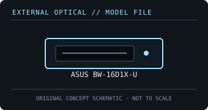

[ OPTICAL DRIVES // IDENTIFIED EXTERNAL MODEL ]
ASUS BW-16D1X-U
External 16× Blu-ray writer with BDXL support. The full model identifier matters; USB throughput, recording media and playback software set the practical limits.

IDENTIFICATION: Confirm the full model/suffix against the label and manufacturer documentation. Read capability is not write capability; speed ratings depend on media and recording mode.
Model-specific specifications
| Catalog subcategory | External Blu-ray drives |
|---|---|
| Exact product identifier | ASUS BW-16D1X-U |
| Supported write formats / rates | BD-R single-layer up to 16× and dual-layer up to 12×; BDXL BD-R triple/quad-layer up to 6×/4×; BD-RE up to 2×. DVD±R up to 16× and CD-R up to 48×. Rated maxima depend on media and mode. |
| Supported read formats / rates | BD-ROM up to 12×; DVD-ROM up to 16×; CD-ROM up to 48×. Reads BD-ROM, BD-R/RE and BDXL media; M-DISC support is listed by ASUS. |
| USB interface and power | USB 3.0 external interface, backward-compatible with USB 2.0 at the host link rate; external power adapter. Connect directly to a suitable host port for rated operation. |
| Host compatibility | Windows and Mac OS X computer hosts are listed for the drive. The bundled Nero backup/burning suite and Blu-ray playback are software/OS dependent; the optical mechanism does not guarantee licensed playback. |
| Model distinction | Full-size external writer with USB 3.0 and 128 GB BDXL capability; do not confuse it with the slim ASUS SBW-06D2X-U. |
Host and media notes
Full-size external writer with USB 3.0 and 128 GB BDXL capability; do not confuse it with the slim ASUS SBW-06D2X-U.
- Use the drive only with media types explicitly supported by the exact manual. BDXL, standard BD-R/RE and UHD Blu-ray are distinct capabilities.
- Check operating-system and playback/authoring application support independently; a USB connection alone does not provide Blu-ray codec, protected-video or UHD playback capability.
- For preservation work, record drive model/firmware, host interface, software, media type, checksums and read/verification errors with each image.
Model documentation and specification sources
- ASUS — BW-16D1X-U product specificationsManufacturer product page identifies 16× BD-R writing, USB 3.0 and BDXL support.
- ASUS BW-16D1X-U user manualModel-specific manual for media, rated speeds, installation and host/software requirements.
Manufacturer and manual speed ratings are maxima under supported media conditions and are not a guarantee of actual sustained read/write performance on an individual disc.